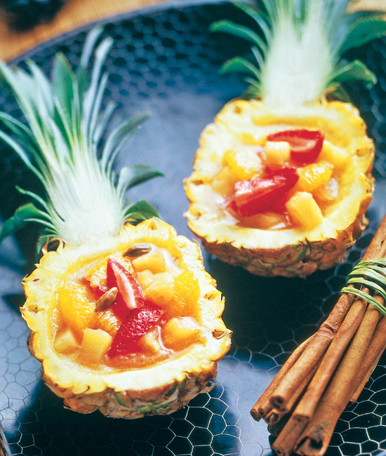
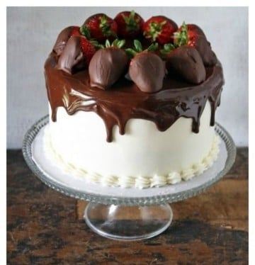

Tarta de fresa (7 recetas de tartas con fresas que te harán pecar) | PequeRecetas
2021.03.31 16:27
Recetas para bebés y niños Recetas para bebés Recetas para niños Recetas familiares Recetas para cenas rápidas Recetas para fiestas infantiles Menús semanales para niños Alimentacion para bebes y niños y alimentación infantil Concursos y Sorteos Recetas para bebés, niños y toda la familia Recetas Navidad Recetas Thermomix Suscribete al Newsletter
Huevos a la flamenca (receta andaluza tradicional)
Arroz a la Milanesa o «Risotto alla Milanese»
80 recetas con pollo FÁCILES para toda la familia
Milanesa Napolitana (receta de ternera empanada con queso)
7 cenas para adelgazar (ligeras y saludables)
PequeRecetas Tarta de fresa (7 recetas de tartas con fresas que te harán pecar)Tarta de fresa (7 recetas de tartas con fresas que te harán pecar)
Pin It Por Mamá Cocina | 2 votos Cargando...¿Os gusta la tarta de fresa ? Me imagino que sí y es que ¡es una de las favoritas de muchísima gente! ¿Quién puede resistirse a una rica tarta de fresa ?
La época de fresas hay que aprovecharla bien porque ya sabéis que es una fruta que no dura mucho en el mercado. Las fresas son una fuente estupenda de vitamina C y manganeso, y también contiene ácido fólico y potasio. Pero además el consumo de la fresa mejora el colesterol y nuestra salud cardiovascular gracias a las antocianinas, reduce los picos de azúcar en la sangre y ayuda a prevenir el cáncer .
Así que tenemos la excusa perfecta para devorar fresas, y de vez en cuando para darnos un capricho con alguna de estas deliciosas tartas de fresa ¿no os parece?
INDICE DE CONTENIDOS
Tarta de fresa y queso sin horno ¡deliciosa! Tarta de fresas con nata, perfecta para los cumpleaños Tarta sin gluten de chocolate blanco y fresas Tarta de fresa fácil y rápida Tarta de fresa y queso mascarpone Tarta de fresas y nata, otra versión más ligera Tartaletas de fresa en forma de corazónTarta de fresa y queso sin horno ¡deliciosa!
Empezamos nuestro repaso por una tarta de fresa sin horno que, ¡para qué contaros! además de fácil y rica, mirad qué pinta tiene. Se hace en un pis pas, y es una tarta ligera con una base de galletas de avena , que combina el sabor de las fresas con un relleno de nata con queso mascarpone y azúcar ¡deliciosa!
Tarta de fresas con nata, perfecta para los cumpleaños
¡Si os gustan las fresas con nata ésta es vuestra tarta! ¿Lo mejor? Os aseguro que es muy fácil de hacer. ¡Toda la familia se chupará los dedos con esta riquísima y esponjosa tarta!
¿A qué estáis esperando para prepararla?
Ver la receta de tarta de fresas con nata .
Tarta sin gluten de chocolate blanco y fresas
Esta tarta de fresa y chocolate blanco no sólo es exquisita sino que no tiene gluten . Como leéis, esta receta es ideal para celíacos. Fresas, nata, almendras y chocolate blanco son algunos de sus ingredientes.
¿Se os está haciendo agua la boca? Descubrid cómo prepararla en el enlace.
Ver la receta de tarta sin gluten de chocolate blanco y fresas .
Tarta de fresa fácil y rápida
Aquí os dejamos otra receta de tarta de fresa muy sencilla, perfecta para merendar un domingo o como tarta de cumpleaños . En este caso, las fresas tienen el protagonismo total y absoluto así que ¡elegid fresas de calidad!
Os aseguro que es tan pero tan fácil que ¡podéis pedirle a los peques que os ayuden a cocinarla!
Ver la receta de tarta de fresas fácil y rápida .
Tarta de fresa y queso mascarpone
Esta tarta es una verdadera monada. ¿Os animáis a prepararla? Lleva fresas y queso mascarpone y para la cobertura, mazapán. Suena bien, ¿verdad?
Si tenéis que organizar un cumpleaños infantil y a la peque le gusta Tarta de Fresa, me imagino que no encontraréis mejor tarta que esta, ¿a qué sí?
Ver la receta de tarta de fresa y queso mascarpone .
Tarta de fresas y nata, otra versión más ligera
Si aún os habéis quedado con más ganas de tartas de fresas con nata, aquí tenéis otra versión más sencilla para disfrutarla después de cualquier comida familiar. Deliciosa, ¿qué más os puedo decir ?
Ver la receta de tarta de fresa y nata .
Tartaletas de fresa en forma de corazón
Me encanta esta idea. Las tartaletas de fresa son perfectas para toda clase de eventos porque se preparan fácilmente y en cantidad y además, ¡los invitados pueden comerlas de pie y sin necesidad de cuchara, cuchillo o tenedor!
¿Lo mejor? Necesitáis muy pocos ingredientes: una lámina de hojaldre, unas fresas naturales, azúcar y azúcar glass. ¡Manos a la obra!
Ver la receta de tartaletas de fresa .
¿Cuál de estas 7 recetas de tarta de fresa os ha gustado más?
2 comentarios sobre “Tarta de fresa (7 recetas de tartas con fresas que te harán pecar)”
1
muchas gracias por todas estas recetas tan deliciosas ya hice algunas y sí resultan, son fáciles y ricas se agradece mucho .
Comentario de liliana 2
Muy buenas recetas
Comentario de IsaDeja un comentario Cancelar respuesta
Este sitio usa Akismet para reducir el spam. Aprende cómo se procesan los datos de tus comentarios .
Por edades
A partir de 6 meses A partir de 9 meses A partir de 1 año Recetas familiaresRecetas diarias
Menús semanales Desayunos Aperitivos y tapas Comidas Postres Meriendas Cenas rápidas BebidasRecetas especiales
Recetas para celiacos Recetas sin leche Recetas sin huevoPor ocasiones
Fiestas y cumpleaños Recetas de Carnaval Recetas de Navidad Recetas de HalloweenPor categoria
Arroz Carnes Cremas y Purés Dulces Ensaladas Frutas Huevos Legumbres Pan y masas Pasta Patatas Pescado Pollo Sandwiches Sopas Tartas VerdurasPor técnica
Thermomix Olla express Guisos MicroondasLo más buscado
Por categoría
Recetas de postres Recetas de pollo Recetas de arroz Recetas de ensaladas Recetas de pescado Recetas de bizcochosLas más buscadas
Crema de calabaza Pollo al horno Croquetas Crema de calabacin Albondigas en salsa Berenjenas rellenasCenas rápidas
Pastel de verduras Ensalada de pasta Hamburguesas caseras Ensaladilla rusa Macarrones con chorizo Tortilla de espinacasRepostería y dulces
Bizcocho de yogur Brownies Tarta de queso Bizcocho de chocolate Tarta de manzana Tarta tres chocolatesAlimentación
Quinoa Jengibre Semillas de Chía Kiwi Curcuma Maca andina @Copyright 2020, Kidealia Media SL Contacto Publicidad Política de Privacidad y Aviso Legal Política de Cookies Condiciones de uso- Recetas de Tartas - 575 recetas
- Recetas con fresas , caseras y fáciles - De Rechupete
- Índice de recetas - MisThermorecetas.com
- Kanela y Limón
- Recetas de Tartas de queso - 53 recetas fáciles (con y sin ...
- Tarta de fresa (7 recetas de tartas con fresas que te ...
- Mia Bakery Madrid
- Camilo de Blas - Confitería fundada en 1914 en Oviedo ...
- Fresa - Información general - Listado de frutas
- Tarta de crema y fresas en hojaldre
- Recetas de Tartas - 575 recetas
Venta de productos de confitería, delicatessen y productos gourmet. El emblemático Carbayón se creó en esta casa en 1924.
- Recetas con fresas , caseras y fáciles - De Rechupete
Aquí te dejo el indice de todo mi blog de recetas de cocina con nuestra máquina preferida la Thermomix!! anímate y prepara tu postre.
- Índice de recetas - MisThermorecetas.com
Las mejores recetas de tartas de queso fáciles con fotos e instrucciones paso a paso. Variedades, recetas clásica de tarta de queso y toda la...
- Kanela y Limón
Un sitio dedicado a la repostería y decoración de pasteles, bizcochos, galletas y más. Con recetas y cómo hacer con pasos fáciles. Blog por Jackie Rodriguez
- Recetas de Tartas de queso - 53 recetas fáciles (con y sin ...
Ensalada de queso fresco con fresas ⭐ 20 min; 1.2€/pers. Ensalada de fresas sobre una cama de queso fresco, jamón ibérico de bellota 100%, con una vinagreta de miel, una de esas ensaladas, que entran por la vista igual de bien que por la boca. Preparación paso a paso y foto. cocina española
- Tarta de fresa (7 recetas de tartas con fresas que te ...
Las fresas de peor presencia se usan para preparar tartas, mousses, soufflés, flanes y pasteles. Se deben conservar en el refrigerador o en su defecto, en un lugar fresco, oscuro y ventilado. No se aconseja su congelación puesto que tras la descongelación pierden gran cantidad de agua, quedando una especie de mermelada cruda, sin aroma.
- Mia Bakery Madrid
Notas: He utilizado un molde de 18cm de diámetro y me ha salido una tarta altísima! Demasiado alta porque abomba un pelín y casi se viene abajo cuando la corté, así que mejor que utilicéis un molde de 20 o incluso de 22 cm. Mi molde tiene 9 cm de alto y tuve que ganar altura con el acetato (bendito acetato) dejándolo sobresalir por la parte superior.
- Camilo de Blas - Confitería fundada en 1914 en Oviedo ...
Tarta de fresa y queso sin horno ¡deliciosa! Empezamos nuestro repaso por una tarta de fresa sin horno que, ¡para qué contaros! además de fácil y rica, mirad qué pinta tiene. Se hace en un pis pas, y es una tarta ligera con una base de galletas de avena, que combina el sabor de las fresas con un relleno de nata con queso mascarpone y azúcar…
- Fresa - Información general - Listado de frutas
Este es el blog de recetas de la tienda online de utensilios de repostería María Lunarillos.Aquí encontrarás las mejores recetas de repostería con fotos paso a paso para disfrutar en casa de un buen postre o una buena tarta. También encontrarás recetas de pan, así como tutoriales para saber más y los mejores e-books de recetas gratis. ...
- Tarta de crema y fresas en hojaldre
Si quieres ir un poco más allá de lo convencional, experimentar con los límites de las mejores tartas de fresas de la historia, toma nota de estas 5 recetas fáciles de preparar.
Venta de productos de confitería, delicatessen y productos gourmet. El emblemático Carbayón se creó en esta casa en 1924.
Aquí te dejo el indice de todo mi blog de recetas de cocina con nuestra máquina preferida la Thermomix!! anímate y prepara tu postre.
Las mejores recetas de tartas de queso fáciles con fotos e instrucciones paso a paso. Variedades, recetas clásica de tarta de queso y toda la...
Un sitio dedicado a la repostería y decoración de pasteles, bizcochos, galletas y más. Con recetas y cómo hacer con pasos fáciles. Blog por Jackie Rodriguez
Ensalada de queso fresco con fresas ⭐ 20 min; 1.2€/pers. Ensalada de fresas sobre una cama de queso fresco, jamón ibérico de bellota 100%, con una vinagreta de miel, una de esas ensaladas, que entran por la vista igual de bien que por la boca. Preparación paso a paso y foto. cocina española
Las fresas de peor presencia se usan para preparar tartas, mousses, soufflés, flanes y pasteles. Se deben conservar en el refrigerador o en su defecto, en un lugar fresco, oscuro y ventilado. No se aconseja su congelación puesto que tras la descongelación pierden gran cantidad de agua, quedando una especie de mermelada cruda, sin aroma.
Notas: He utilizado un molde de 18cm de diámetro y me ha salido una tarta altísima! Demasiado alta porque abomba un pelín y casi se viene abajo cuando la corté, así que mejor que utilicéis un molde de 20 o incluso de 22 cm. Mi molde tiene 9 cm de alto y tuve que ganar altura con el acetato (bendito acetato) dejándolo sobresalir por la parte superior.
Tarta de fresa y queso sin horno ¡deliciosa! Empezamos nuestro repaso por una tarta de fresa sin horno que, ¡para qué contaros! además de fácil y rica, mirad qué pinta tiene. Se hace en un pis pas, y es una tarta ligera con una base de galletas de avena, que combina el sabor de las fresas con un relleno de nata con queso mascarpone y azúcar…
Este es el blog de recetas de la tienda online de utensilios de repostería María Lunarillos.Aquí encontrarás las mejores recetas de repostería con fotos paso a paso para disfrutar en casa de un buen postre o una buena tarta. También encontrarás recetas de pan, así como tutoriales para saber más y los mejores e-books de recetas gratis. ...
Si quieres ir un poco más allá de lo convencional, experimentar con los límites de las mejores tartas de fresas de la historia, toma nota de estas 5 recetas fáciles de preparar.
 